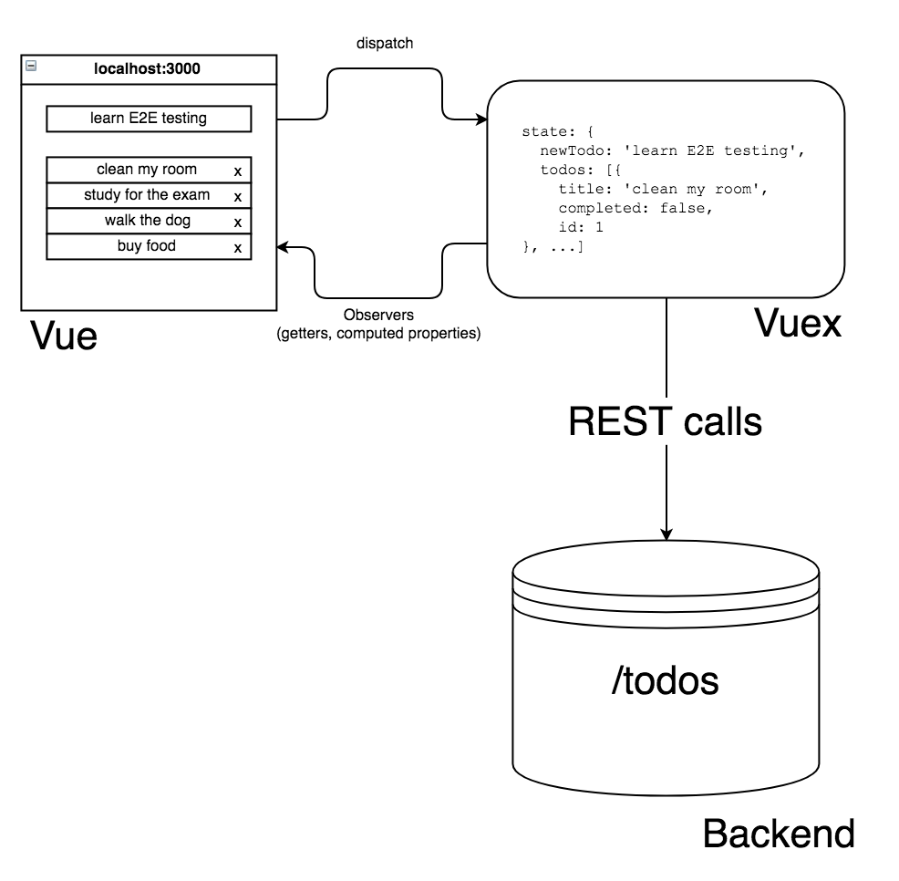
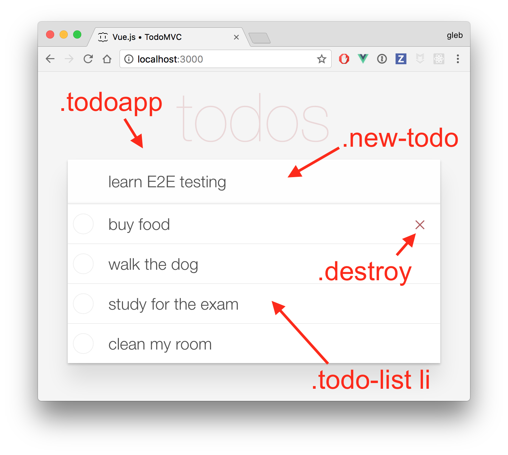

使用 Cypress 测试 基于 Vue，Vuex，REST backend 的应用
https://auth0.com/blog/building-modern-applications-with-django-and-vuejs/
基于Vue.js网页应用，并且是基于 Vuex 进行数据状态管理的。后端服务实现一个简单的REST API 存在store 中，去修改或者删除数据。数据的整个状态流是这样的：

UI 测试
测试用户的界面，我们用Cypress.io 会很酷。我们测一个 “TODOMVC” 的应用。用户可以输入文字，按回车键可以在列表上添加一条新的todo list。这个截图的下方我注释了从端对端测试与应用程序进行交互的关键 CSS 类。

我们可以编写最简单的测试是加载应用程序并检查应用程序元素是否可见的测试。
// ui-spec.js
it('loads the app', () => {
cy.visit('/')
cy.get('.todoapp').should('be.visible')
})
测试通过：正在加载页面，找到并显示带有选择器.todoapp的元素。
重置数据
在每次测试之前，将待办事项列表设置为某种初始状态将会很好。 例如，为了简单起见，我们的测试总是以空列表开始。 由于Cypress 测试运行时可以完全访问操作系统，因此我们可以编写NPM命令来执行数据重置操作并在每次测试之前触发命令：
const resetDatabase = () =>
cy.exec('npm run reset:database')
describe('UI', () => {
beforeEach(resetDatabase)
it('starts with zero items', () => {
cy.visit('/')
cy.get('.todo-list')
.find('li')
.should('have.length', 0)
})
})
在我们的简单应用程序中
，后端是一个运行在名为 data.json 的常规 JSON 文件上的 json-server。添加了几个项目之后，该文件如下所示：
{
"todos": [
{
"title": "first item",
"completed": false,
"id": "4973171049"
},
{
"title": "second item",
"completed": false,
"id": "7205378173"
}
]
}
在这种简单的情况下，我们可以使用cy.writeFile()命令直接从测试中覆盖该文件，而不是编写NPM命令。
export const resetDatabase = () => {
// 如果需要，我们可以有更复杂的初始状态
const data = {
todos: []
}
const str = JSON.stringify(data)
cy.writeFile('./data.json', str)
// short delay gives json-server a chance to reload
// when watching the file
cy.wait(1000)
}